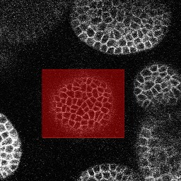

This application allows you to select local file or an image in the Bisque database and automatically segment the plant cells' boundaries with centroids identified in 2D/3D/4D confocal microscopic imagery. These boundaries and centroid locations can be exported as text, excel file, XML or visualized overlayed on image. The segmentatoin resulsts can be used for additional analysis such as plant cell tracking.
We start with a confocal image slice that has a number of plant cells to be segmented out: you can choose the 2D region of interest by first clicking "rectangle" then "select" after you select the input image. Similarly, if the input is a stack of images slices or time series of image stacks, you can choose the 3D or 4D region of interest by picking the first 2D region of interest in the starting (either spatially or temporally) frame and the second 2D region of interest in the ending (either spatially or temporally) frame.

The segmented cell boundaries (cell walls) with centroids look like this: